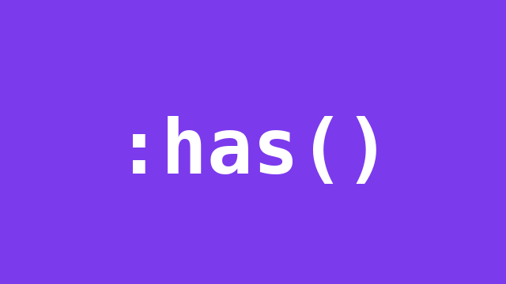

1. Highlight the card you picked
Tap a card. The checkbox lives inside the card, and the card styles itself when the box is checked. The old way was a change listener and a class.
.pick:has(input:checked) {
border-color: #7c3aed;
background: #ede9fe;
}2. Flag the field with the bad input
Type something that is not an email address. The box around the field turns red and the hint appears, from one selector. Type a real address and it turns green.
That does not look like an email address yet.
Looks good.
.field:has(input:invalid) {
border-color: #b91c1c;
}
.field:has(input:invalid) .hint {
display: block;
}3. Style the figure only when it has an image
The button adds and removes the image element itself. The caption bar and the purple border exist only while the image is in the figure. Nothing re-renders. The stylesheet notices the image is gone.
The figure has an image right now.

figure:has(img) {
border-color: #7c3aed;
}
figure:has(img) figcaption {
display: block;
}On this device
The readout at the top is a live check run in your browser, not a claim from a table. It evaluates CSS.supports('selector(:has(*))'). If it says yes, every example above is really running on :has().
| Browser | :has() shipped in |
|---|---|
| Chrome | 105 |
| Edge | 105 |
| Firefox | 121 |
| Safari | 15.4 |
Safari 15.4 covers macOS and iOS, so this works in Safari on iPhone, not just Chromium. The readout above is the ground truth for whatever browser you are in right now.
The fallback pattern
A browser that does not know :has() ignores the whole rule, so the page just looks plain. Nothing breaks. When the styled version needs a deliberate fallback, wrap the rule in a feature query. The selector() check is older than :has() itself, so it works everywhere :has() does.
@supports selector(:has(*)) {
.pick:has(input:checked) {
border-color: #7c3aed;
}
}